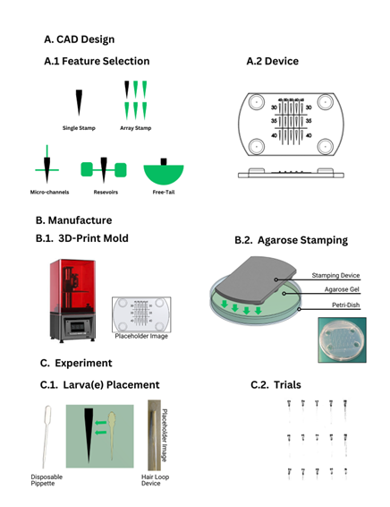

Project Overview: Agarose Stamping for Zebrafish Larvae Fixation
8/6/2025 - Included CAD Files in github repo https://github.com/JJutoy2/Agarose-Stamping-Device
This site presents an in-depth documentation of the Agarose Stamping methodology developed for larval zebrafish immobilization and imaging. Designed as an accessible and modular technique, the method enables rapid and reproducible positioning of individual larvae in agarose for high-quality visual access while preserving essential physiological behaviors. The purpose of this static site is to serve as a comprehensive reference for researchers, educators, and students who wish to understand, replicate, or build upon this system.
The Agarose Stamping project was developed as part of a broader effort to improve closed-loop neurobehavioral experimentation using larval zebrafish. Specifically, it addresses a core limitation in standard immobilization techniques by offering a rapid, standardized, and reproducible solution for larval head fixation that allows for:
- Easy and consistent larva alignment
- Head-fixed with free eye, mouth, and/or tail configurations
- Array configuration for multi-larva experiments
- Visual stimulus for behavioral assays (OKR/OMR)
The Agarose Stamping Method overview

Requirements
Successful implementation of the agarose stamping method requires the following equipment, materials, and preparatory conditions. These elements ensure reproducibility, precision, and compatibility with downstream imaging and behavioral experimentation workflows.
-
Stamping Device and Fabrication Tools
- Custom-designed agarose stamp mold, typically 3D printed using high-resolution SLA resin printing (e.g., Formlabs printer).
- CAD software (e.g., Onshape or Solidworks) for designing or modifying the mold geometry.
- Access to a UV-curable resin printer with sufficient resolution (≤50 μm resolution recommended).
- Post-processing materials (e.g., isopropyl alchohol/resin detergent, UV curing station) for cleaning and hardening the mold.
-
Agarose Preparation and Handling
- Low-melting-point agarose (1.5–2% concentration typical for stamping; final concentration may vary depending on experimental needs).
- Petri dishes (35 mm or 60 mm) for casting agarose pads.
- Heated water bath or microwave for dissolving agarose.
- Pipettes and tips for precise agarose transfer.
-
Zebrafish Larvae and Transfer Tools
- Healthy Danio rerio larvae, 5–7 days post-fertilization (dpf)
- Fine hair loop tools or microdissection forceps for larval manipulation.
- Optional: E3 medium or system water for temporary larval holding.
Designing an Agarose Stamped Device
Detailed instructions are provided for designing the stamping device using CAD software, including customizable features such as:
- Single-larva or array configurations
- Microchannels for fluidic applications
- Water reservoirs for long-term experiments
- Free-tail slots for locomotion studies
The section walks users through designing their own Agarose Stamps with feature considerations using the provided .step files. This section also goes over exporting the STL files, 3D printing the mold (with considerations on resolution and resin compatibility), and post processing.
CAD Files can be found here: Github:JJutoy2/Agarose-Stamping-Device
Creating an Agarose Stamped Device
Credit: Hossein Mehrabi
Placing Larvae in an Array Configuration
Credit: Hossein Mehrabi
Tail and Eye Tracking Experiment
Utilizing the Agarose Stamped Device with a free eye/mouth/tail configuration with a rotating grating stimuli.
Credit: John Jutoy